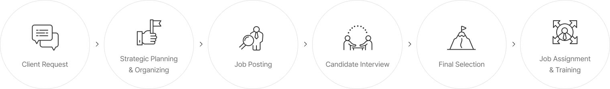
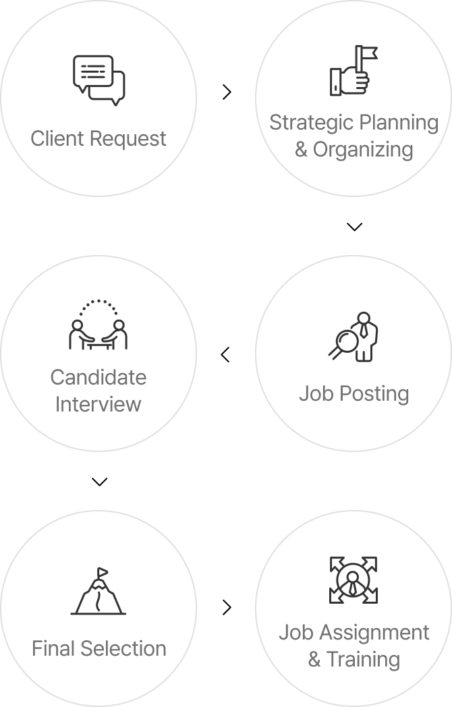

메인 이미지 입니다.
Providing outsourced operation services
Field Services
We help our clients boost their operational efficiency
by outsourcing specific procedures.
Field Services
Upon formalizing an employment contract with the client company, transcosmos Korea maintains the employment relationship with the workforce based on a mutually agreed schedule and methods.
We deliver superior outsourced operations and talent dispatch services that cater to the employer's requirements, utilizing our professional expertise and knowledge.
Primary Services
transcosmos Korea is at the forefront of offering various innovative digital services.
-
Offline Business Operations 
To elevate managerial efficiency and minimize uncertainty risks, transcosmos Korea delegates operations to professional agencies that best align with the needs and requirements of each client. With this strategy, we enhance service quality and provide operational services in offline sectors such as store operation, security, facility management, parking, and more.
-
Staffing Service
transcosmos Korea assesses the customer service levels at our clients' offline stores and conducts comprehensive examinations on various operational facets, such as employee training, attendance tracking, and store management, to identify potential areas for improvement and deliver custom solutions. Moreover, we enable our clients to bolster their brand image and preemptively mitigate customer complaints by facilitating professional customer service delivery by their staff at offline stores.
![01 Client Request(Visit to the client company, Comprehension of recruitment parameters & ideal candidate profiles) 02 Quote Preparation(Related industries market research, Cost negotiation, Contract finalization) 03 Recruitment(Job manager assignment, Job posting design, Job posting publication on major job search websites, Receiving candidate recommendations based on internal and external databases) 04 Candidate Recommendation(Forwarding interviewee shortlist, Review of recommended candidates by the client, Feedback from the client) 05 Client Interview(Scheduling interviews, Notification of interview timelines to candidates, Post-interview communication on final results) 06 Onboarding(Employment of the final selected candidates) 07 Post-recruitment Services(Emotional support for new hires, Proactive talent acquisition to handle potential attrition)](../../assets/images/business_fieldservice03.png)
![01 Client Request(Visit to the client company, Comprehension of recruitment parameters & ideal candidate profiles) 02 Quote Preparation(Related industries market research, Cost negotiation, Contract finalization) 03 Recruitment(Job manager assignment, Job posting design, Job posting publication on major job search websites, Receiving candidate recommendations based on internal and external databases) 04 Candidate Recommendation(Forwarding interviewee shortlist, Review of recommended candidates by the client, Feedback from the client) 05 Client Interview(Scheduling interviews, Notification of interview timelines to candidates, Post-interview communication on final results) 06 Onboarding(Employment of the final selected candidates) 07 Post-recruitment Services(Emotional support for new hires, Proactive talent acquisition to handle potential attrition)](../../assets/images/m_business_fieldservice03.png)
Distinct Features
transcosmos Korea prides itself on its extensive industrial expertise and superior technical capabilities.
-
Prework Job Training and Learning
We amplify core competencies by offering
prework training and learning to the
workforce to be dispatched for our clients. -
Efficient Workforce Management
We alleviate the burden of workforce
management and reduce the cost and time
spent on workforce allocation and supervision. -
Minimized Workforce Risks
In the event of any incidents caused by an
outsourced workforce, we minimize the
associated risks by immediately addressing
personnel issues.